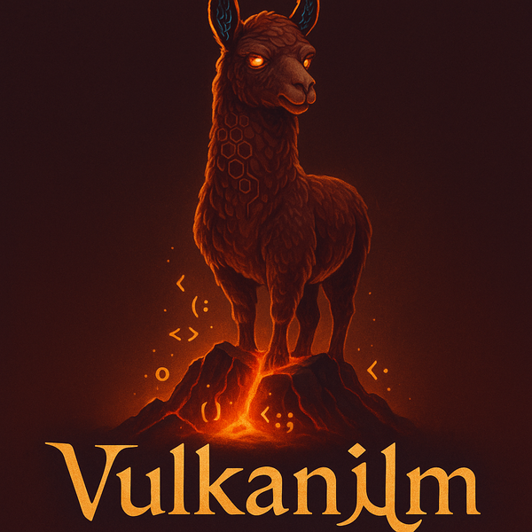
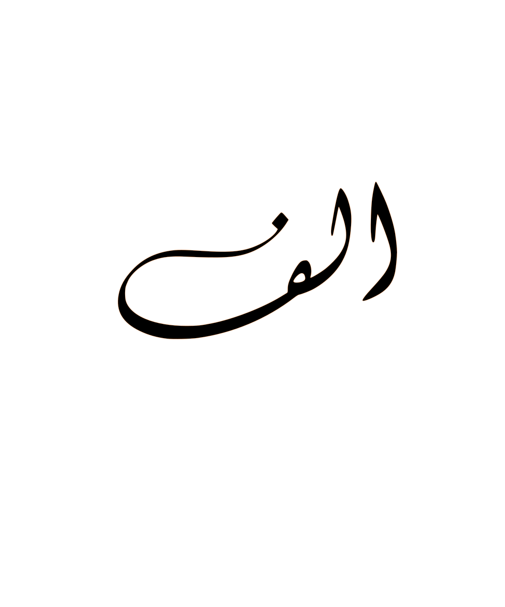
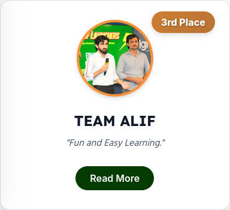
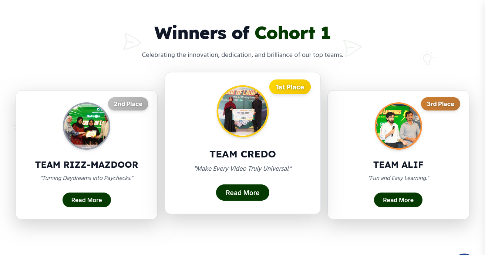
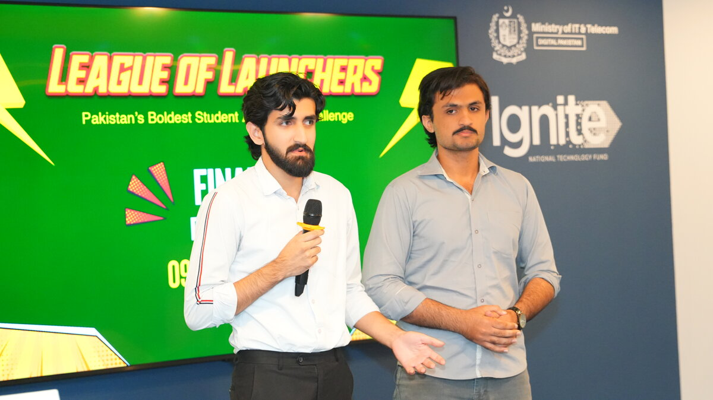

VulkanIlm
GPU-accelerated LLaMA inference wrapper using llama.cpp for efficient use on legacy hardware.
AI and Software Engineering Portfolio
Machine Learning Engineer building practical GenAI systems, RAG pipelines, backend services, and automation that move from prototype to production.
GPU-accelerated LLaMA inference wrapper using llama.cpp for efficient use on legacy hardware.
NIC League of Launchers 2025 runner-up: an AI tutor platform with RAG, voice, and semantic search.

Here is a bit about me
AI & Software Engineer focused on shipping production-ready AI systems, building intelligent data architectures, and automating processing pipelines. Experienced in generative AI (RAG, agentic workflows), backend API development, red teaming, and MLOps deployment.
Currently interning at NACTA, building threat-intel pipelines; and contributing to LLM fine-tuning and adversarial red teaming at Sirovista.
Download ResumeTake a look at my works
GPU-accelerated LLaMA inference wrapper using llama.cpp for efficient GPU utilization on legacy hardware. Featured on Reddit with 40k+ insights across r/LocalLLaMA and r/MachineLearning communities.

NIC Runner-upAI-powered personal tutor app featuring RAG-powered Q&A, Whisper transcription, Gemini integration, and pgvector semantic search.
 Recommender
Recommender
Content-based filtering system that recommends movies from user preferences and similarity signals.
 Computer Vision
Computer Vision
Real-time digit recognition system built with convolutional neural networks.
 NLP Bot
NLP Bot
Chatbot that lets customers order food, track orders, and check store hours.
 NLP Classifier
NLP Classifier
NLP-based spam detection system for classifying unwanted email with high accuracy.
What I bring to the table
The path I have taken
Designed automated data extraction pipelines from unstructured web sources using Selenium and Python. Architected internal data ingestion workflows using Docker and Linux for threat intelligence data.
Contributed to supervised fine-tuning and agent completion supervision for a foundational LLM. Designed multi-turn agent datasets with complex function calling. Performed adversarial red teaming and safety annotation to harden model behavior.
Mentored AI fellows on GenAI applications, agent frameworks, system design, and MVP execution. Reviewed architectures focusing on feasibility, cost, latency, and deployment readiness.
Developed full-stack HRMS with FastAPI, Next.js, and PostgreSQL for 1k+ employees, automating payroll and attendance. Optimized SQL schemas (25% query speedup), Dockerized backend with CI/CD, Prometheus, and Grafana monitoring.
8-week mentor-led startup acceleration program. Validated AI-powered learning startup Alif with mentorship from S&P Global, Google, Notion, and Slack partners.



Certified in what I practice